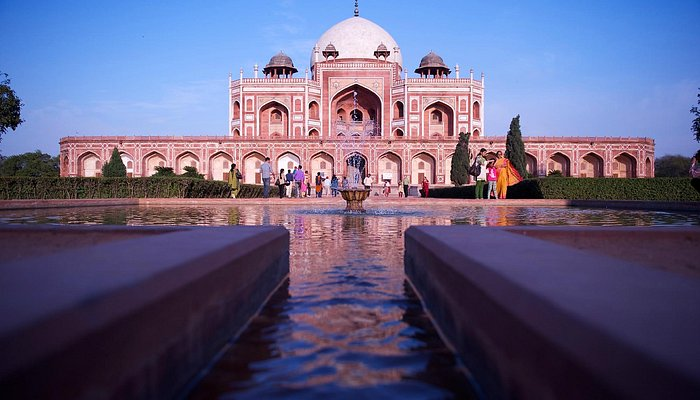

Famous Places
Qutub Minar
The Qutb Minar, also spelled Qutub Minar and Qutab Minar, is a minaret and victory tower comprising the Qutb complex, which lies at the site of Delhi's oldest fortified city, Lal Kot, founded by the Tomar Rajputs.It is a UNESCO World Heritage Site in the Mehrauli area of South Delhi, India. It was mostly built between 1199 and 1220, contains 399 steps, and is one of the most-frequented heritage spots in the city. After defeating Prithviraj Chauhan, the last Hindu ruler of Delhi before the Ghurid conquest of the region,Qutab-ud-din Aibak initiated the construction of the victory tower, but only managed to finish the first level. It was to mark the beginning of Islamic rule in the region. Successive dynasties of the Delhi Sultanate continued the construction, and, in 1368, Firuz Shah Tughlaq rebuilt the top parts and added a cupola.
Swaminarayan Akshardham
'Akshardham' means the divine abode of God. It is hailed as an eternal place of devotion, purity and peace. Swaminarayan Akshardham at New Delhi is a Mandir – an abode of God, a Hindu house of worship, and a spiritual and cultural campus dedicated to devotion, learning and harmony. Timeless Hindu spiritual messages, vibrant devotional traditions and ancient architecture all are echoed in its art and architecture.The mandir is a humble tribute to Bhagwan Swaminarayan (1781- 1830), the avatars, devas and great sages of Hinduism. The traditionally-styled complex was inaugurated on 6 November 2005 with the blessings of HH Pramukh Swami Maharaj and through the devoted efforts of skilled artisans and volunteers.
Humayun's Tomb
Humayun's tomb is the tomb of Emperor Mirza Nasir al-Din Muhammad commonly known as Humayun situated in Delhi, India. The tomb was commissioned by Humayun's first wife and chief consort, Empress Bega Begum under her patronage in 1558, and designed by Mirak Mirza Ghiyas and his son, Sayyid Muhammad, Persian architects chosen by her. It was the first garden-tomb on the Indian subcontinent, and is located in Nizamuddin East, Delhi, close to the Dina-panah Citadel, also known as Purana Qila, that Humayun found in 1538. It was also the first structure to use red sandstone at such a scale. The tomb was declared a UNESCO World Heritage Site in 1993, and since then has undergone extensive restoration work, which is complete.
India Gate

The India Gate is a war memorial located near the Rajpath on the eastern edge of the "ceremonial axis" of New Delhi. It stands as a memorial to 74,187 soldiers of the Indian Army who died between 1914 and 1921 in the First World War, in France, Flanders, Mesopotamia, Persia, East Africa, Gallipoli and elsewhere in the Near and the Far East, and the Third Anglo-Afghan War. 13,300 servicemen's names, including some soldiers and officers from the United Kingdom, are inscribed on the gate. Designed by Sir Edwin Lutyens, the gate evokes the architectural style of the ancient Roman triumphal arches such as the Arch of Constantine in Rome, and later memorial arches.
Lotus Temple
The Lotus Temple is a House of Worship in New Delhi, India. It was completed in December 1986. Notable for its lotus-like shape, it has become a prominent attraction in the city. Like all Houses of Worship, the Lotus Temple is open to all, regardless of religion or any other qualification. The building is composed of 27 free-standing marble-clad "petals" arranged in clusters of three to form nine sides,with nine doors opening onto a central hall with a height of slightly over 34 metres and a capacity of 1,300 people. The Lotus Temple has won numerous architectural awards and has been featured in many newspaper and magazine articles.